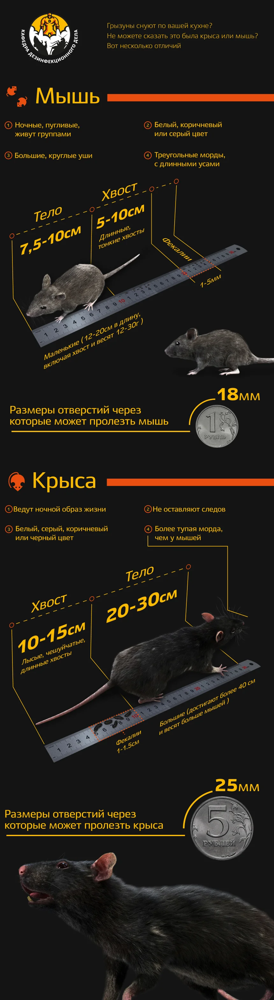
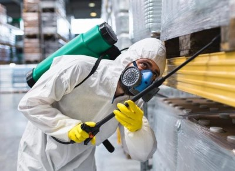

Как определить, крысы у вас или мыши? Полное руководство по дератизации грызунов в Омске

Обнаружение грызунов в доме, квартире или на коммерческом объекте — всегда неприятный и опасный сюрприз. Но прежде чем начать борьбу, важно понять, с кем именно вы имеете дело: с крысой или мышью. От этого зависит выбор тактики, препарата и, в конечном счете, эффективность **уничтожения грызунов**. В этом подробном руководстве мы расскажем, как провести "домашнюю диагностику", и почему для надежного результата стоит обратиться к профессионалам **СЭС в Омске**.
Признаки грызунов в доме: как понять, что они уже здесь
Грызуны — мастера маскировки, но их присутствие всегда выдают характерные следы. Обратите внимание на следующие **признаки крыс и мышей**:
- Помет: Самый очевидный признак. Размер и форма экскрементов сразу укажут на вид вредителя.
- Звуки: Шуршание, скрежет, писк, особенно в ночное время, когда грызуны наиболее активны. Мыши более "шумные" и активные в стенах и перекрытиях.
- Повреждения: Следы зубов на проводах, деревянных конструкциях, мебели, упаковках с едой. Крысы оставляют более крупные и глубокие следы.
- Запах: Мышиный запах — сильный, мускусный, легко узнаваемый. Крысы могут оставлять более выраженный запах аммиака.
- Следы и тропы: Жирные, темные пятна (следы от шерсти и жира) вдоль стен, плинтусов и в углах, где грызуны регулярно передвигаются.
Крыса или мышь: ключевые отличия для выбора тактики дератизации
Различия между этими двумя вредителями критически важны для выбора метода **дератизации**. Крысы умнее, осторожнее и требуют более агрессивного подхода, чем мыши.
Сравнительная таблица: Мышь против Крысы
| Признак | Мышь (Домовая) | Крыса (Серая, Черная) |
|---|---|---|
| Размер тела | 7-10 см (без хвоста) | 15-25 см (без хвоста) |
| Размер помета | 3-7 мм, тонкий, заостренный | 10-20 мм, тупой, похож на зерно риса |
| Повреждения | Мелкие, частые, "погрызенные" края | Крупные, глубокие, четкие следы зубов |
| Поведение | Любопытные, быстро осваивают новые ловушки, но едят небольшими порциями. | Крайне осторожные (неофобия), избегают новых предметов, едят большими порциями. |
| Размножение | До 8 пометов в год, 4-7 детенышей | До 6 пометов в год, 8-12 детенышей |
Почему важно правильно определить вредителя?
Неправильная идентификация приводит к неэффективной борьбе. Например, крысы, благодаря своей осторожности (неофобии), будут игнорировать ловушки и приманки, предназначенные для мышей. Мыши, в свою очередь, могут не отреагировать на сильные родентициды, рассчитанные на крыс. Профессиональная **дератизация** всегда начинается с точной диагностики, чтобы выбрать правильный тип приманки, ее концентрацию и место размещения.
Профессиональная дератизация в Омске: Гарантия результата
Самостоятельная борьба с грызунами редко приносит долгосрочный результат. Крысы и мыши быстро размножаются и адаптируются к бытовым ядам. **СЭС "СибДез" в Омске** предлагает комплексные услуги по **уничтожению крыс и мышей** с гарантией.
Наши методы профессиональной дератизации:
- Химический метод (Родентициды): Использование профессиональных отравленных приманок, которые недоступны в свободной продаже. Мы применяем препараты, вызывающие гибель грызунов не сразу, а через несколько дней, что исключает развитие "приманочной боязни" у колонии.
- Барьерный метод: Создание защитных барьеров и обработка мест проникновения, чтобы предотвратить повторное появление грызунов.
- Комплексный подход: Сочетание химических и механических методов (ловушки, клеевые пластины) для максимальной эффективности.
Как проходит обработка от грызунов (Дератизация)
Процесс профессиональной **дератизации** от "СибДез" включает несколько этапов:
- Обследование объекта: Специалист определяет вид грызуна, места его обитания, пути передвижения и степень заражения.
- Разработка плана: Составляется индивидуальный план обработки с учетом особенностей объекта (квартира, частный дом, склад, предприятие).
- Установка приманок и ловушек: Приманки размещаются в специальных контейнерах (станциях), недоступных для детей и домашних животных, в местах активности грызунов.
- Контроль и повторная обработка: Через 7-14 дней проводится контрольный визит для оценки результата и, при необходимости, повторной обработки.
Важно: Мы используем только сертифицированные, безопасные для людей и домашних животных препараты, которые при этом смертельны для грызунов.
Не откладывайте решение проблемы!
Грызуны не только портят имущество, но и являются переносчиками опасных заболеваний. Если вы обнаружили **признаки грызунов в доме**, не тратьте время на неэффективные народные средства. Обратитесь к профессионалам **СЭС в Омске**.